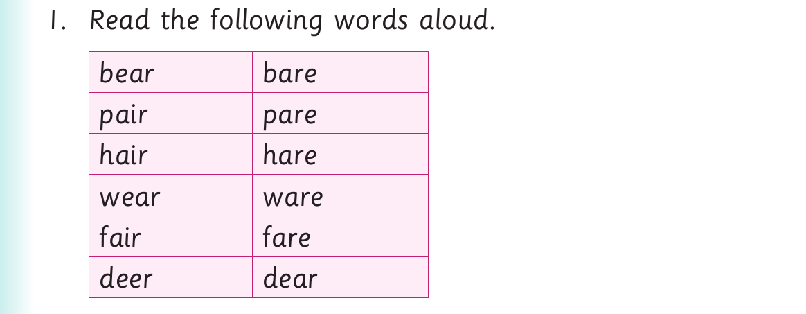

I identify similar and different sounds in words
I identify similar and different sounds in words.
Activity 1

1. Read the following words aloud. bear bare pair pare hair hare wear ware fair fare deer dear
2. Read the following sentences aloud: (a) Hannah could not bear children. (b) Do not walk barefoot. (c) He can pare an apple. (d) She bought one pair of socks. (e) Does a hare have hair? (f) Neema wears a blue sweater every day. (g) We bought new glassware from that shop.
(h) It is fair to pay a fare.
3. Mention other words which have the same pronunciation.